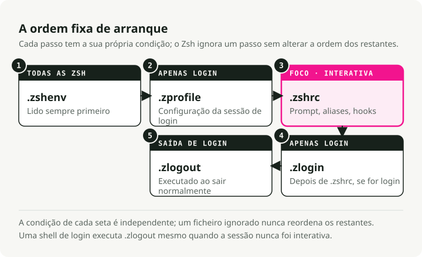

Tradução automática
Este artigo foi traduzido automaticamente a partir da versão original em inglês.
Ficheiros de Inicialização do Zsh: ~/.zprofile versus ~/.zshrc em macOS e Linux
Se o seu terminal parecer lento, ou se as suas variáveis de ambiente não estiverem a ser carregadas onde esperava, é provável que esteja a enfrentar a ordem de inicialização do Zsh.
A separação entre ~/.zprofile e ~/.zshrc é uma das fontes mais comuns de confusão quando se passa para o Zsh, especialmente no macOS, onde as configurações padrão comportam-se de forma diferente em relação ao Linux.
TL;DR
~/.zprofile destina‑se à configuração do ambiente. É executado uma vez por cada login, o que, no macOS, significa uma vez por cada aba do terminal. Coloque o seu PATH, EDITOR, e gestores de versão como fnm ou pyenv Aqui está.
~/.zshrc É utilizado para configuração interativa. É executado sempre que inicia um novo shell. Coloque aliados, temas de prompt e associações de teclas.
O fluxo de inicialização do shell
Para saber onde colocar os elementos, é necessário conhecer o momento em que os ficheiros são carregados. O Zsh possui uma hierarquia específica para isso.
Shell de login vs. shell interativo
Uma shell de login é a primeira shell que se obtém após a autenticação. No macOS, cada nova aba ou janela de terminal é, por predefinição, uma shell de login. No Linux, abrir um terminal geralmente inicia uma shell interativa não de login, o que é a causa da maior parte das confusões entre plataformas.
Uma shell interativa é qualquer ambiente em que se pode digitar comandos.
Eis o que realmente acontece quando se abre um terminal no macOS:

A ordem de carregamento
~/.zshenv(Opcional). É executado em cada shell, incluindo scripts não interativos. Não coloque saídas ou lógica complexa aqui — isso pode quebrar os scripts que carregam a sua configuração. Utilize-o apenas para variáveis de ambiente que devem existir em todos os locais, o que é raro na maioria dos casos.~/.zprofile. É executado apenas em shells de login. A sua fase de configuração.~/.zshrc. Executa em shells interativos. A sua fase de personalização.~/.zlogin(opcional). É executado no final absoluto da inicialização de um shell de login.
Onde é executado cada componente? ~/.zprofile: a camada de ambiente
É aqui que se configuram os elementos que todos os outros processos herdam — caminhos, variáveis, gestores de versão de linguagem.
O que pertence aqui:
PATHmodificações.- Variáveis de ambiente:
EDITOR,LANG,GOPATH,JAVA_HOME. - Inicialização da ferramenta que afeta o ambiente:
pyenv,rbenv,fnm,cargoEstes só precisam de ser calculados uma vez. Se os inserir em.zshrc, são recalculados de cada vez que se abre um sub-shell ou se executa um script, o que tanto gasta tempo como pode deixar entradas duplicadas no seuPATH.
# ~/.zprofile
# 1. Set up your PATH
# Local bin first so your tools override system ones
export PATH="$HOME/.local/bin:/opt/homebrew/bin:$PATH"
# 2. Global variables
export EDITOR="nvim"
export VISUAL="nvim"
export LANG="en_US.UTF-8"
# 3. Version managers (the heavy ones)
# Doing this here keeps shell startup fast
eval "$(fnm env --use-on-cd)"
eval "$(pyenv init -)"
~/.zshrc: a camada interativa
É aqui que personaliza o shell no qual efetivamente digita.
O que deve estar aqui:
- Aliases:
alias g='git'. - O seu prompt: Starship, Powerlevel10k, Pure.
- Completamentos:
compinit. - Vinculações de teclas:
bindkey. - Opções da shell:
setopt autocd,setopt histignorealldupsEstes fatores só são relevantes quando há um humano a operar o teclado. Um script em execução em segundo plano não necessita da sua entrada ou dos aliases do Git.
# ~/.zshrc
# 1. Prompt
autoload -Uz promptinit && promptinit
prompt pure
# 2. Aliases
alias ll='ls -lah'
alias g='git'
alias gs='git status'
# 3. Shell options
setopt autocd # cd by typing the directory name
setopt histignorealldups # skip duplicate history entries
setopt share_history # share history across tabs
# 4. Completions
autoload -Uz compinit && compinit
Porque não colocar tudo num único ficheiro?
Podem estar a perguntar-se: se .zprofile é executado primeiro; por que não definir os seus aliases aí e pular esse passo? .zshrc totalmente?
Tudo se resume à herança versus à redefinição.
Variáveis de ambiente são herdadas
Quando você export EDITOR="vim" em um shell pai, todo processo filho o herda: subshells, scripts e programas. Defina-o uma vez e ele se propaga pela árvore, e é por isso que .zprofile é o local adequado para export### Alias e funções não o fazem
Alias como alias g='git' As funções de shell são locais ao shell atual. Elas não são transmitidas para shells filhos.
Se definir um alias em .zprofile, ele existe no seu shell de login de nível superior. No momento em que você digita zsh para iniciar um sub-shell ou executar um script, esse alias já não existe. Para ter aliases em todos os locais, é necessário redefini-los em cada novo shell interativo. É exatamente isso que .zshrc destina-se a../deploy.sh), ele inicia um novo shell não interativo. Não precisa do seu prompt, não precisa dos seus aliases do git e certamente não quer esperar por oh-my-zsh para concluir o carregamento. Mantendo a configuração interativa em .zshrc significa que os scripts são executados de forma rápida e limpa, sem que haja vazamento de personalizações pessoais.
Armadilhas comuns
Implementação nvm ou pyenv em .zshrc
Abre-se uma nova aba de terminal e são necessários dois ou três segundos antes de se poder digitar algo. Os gestores de versões costumam ter um processo de inicialização bastante pesado. .zshrc é executado de cada vez. Mova-os para ~/.zprofile e o atraso desaparece.
Um crescimento contínuo PATH
Seu $PATH acaba por ter os mesmos diretórios listados cinco vezes. A causa é quase sempre export PATH="$HOME/bin:$PATH" localizado em .zshrc: em cada recarregamento (source ~/.zshrc) ou o sub-shell anexa novamente o caminho. Mova PATH definições para ~/.zprofile.
Mudanças em ~/.zprofile não se aplica ao seu shell atual, porque .zprofile é lido apenas aquando do login. Pode fechar a aba e abrir uma nova (a opção mais simples) ou executar source ~/.zprofile manualmente. .zshrc, apenas:
source ~/.zshrc
Uma configuração que funciona no macOS e no Linux
Se alternar entre diferentes máquinas (macOS no trabalho, Linux em casa, ou vice‑versa), irá deparar‑se com um problema. Os terminais Linux costumam iniciar como shells sem necessidade de login, o que significa que eles ignoram ~/.zprofile totalmente.
A solução habitual é utilizar como fonte .zprofile de .zshrc quando ainda não foi carregado:
# ~/.zshrc
# On Linux/non-login shells, make sure the environment is set
if [[ -o interactive && ! -o login ]]; then
[[ -f ~/.zprofile ]] && source ~/.zprofile
fi
# ... rest of your interactive config
Resumo
| Ficheiro | Propósito | Exemplos |
|---|---|---|
~/.zshenv |
Variáveis de ambiente críticas | ZDOTDIR (Somente para utilizadores avançados) |
~/.zprofile |
Configuração do ambiente | PATH, EDITOR, eval "$(pyenv init -)" |
~/.zshrc |
Configuração interativa | alias, prompt, bindkey, compinit |
Duas regras abrangem a maior parte deste caso. As variáveis são herdadas ao longo da árvore de processos, portanto export pertence a .zprofile. Os aliases e funções não herdam, portanto pertencem a .zshrc e têm de ser redefinidos para cada nova shell interativa. Se as novas abas parecerem lentas, o culpado é quase sempre um processo pesado pyenv init ou nvm.sh localizado em .zshrc em vez de .zprofile.
Principais Conclusões
- Utilize
.zprofilepara a configuração do shell de login, como a inicialização do PATH no Terminal do macOS. - Utilize
.zshrcpara comportamentos de shell interativo, como aliases, configuração do prompt, completions e opções de shell. - Não duplicar as edições do PATH em ambos os ficheiros; a duplicação torna a depuração da ordem de inicialização muito complexa.
- Em caso de dúvida, colocar o arranque do ambiente em
.zprofilee funcionalidades interativas em.zshrc.
Referências
- Documentação de ficheiros de inicialização do Zsh - Ordem dos ficheiros de arranque e encerramento. Guia do Utilizador do Apple Terminal - Comportamento da terminal no macOS.